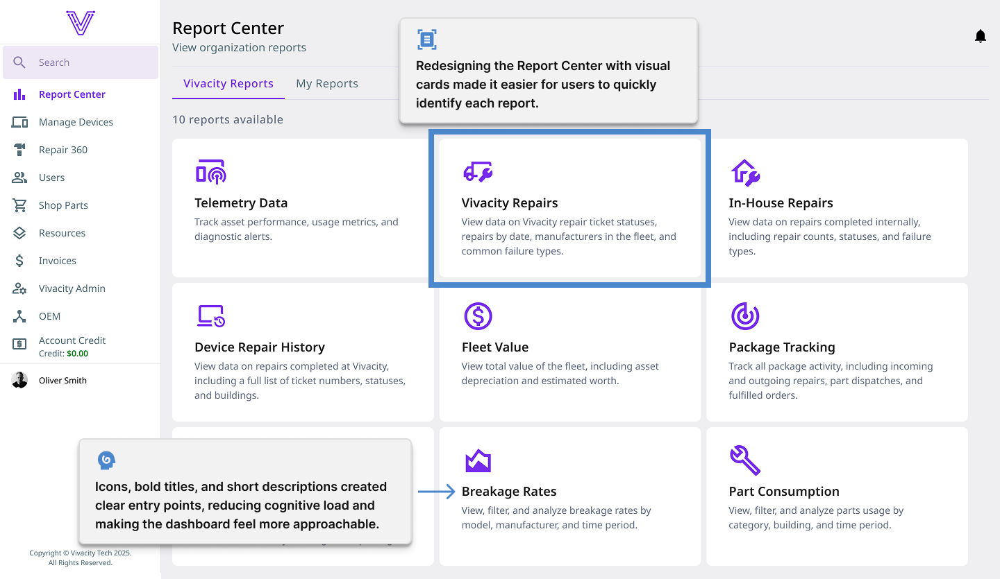
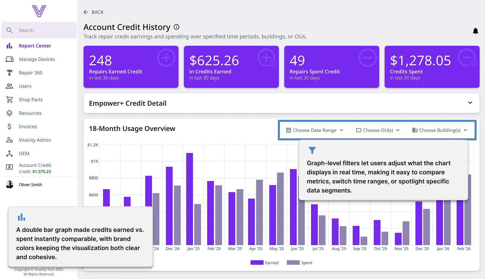
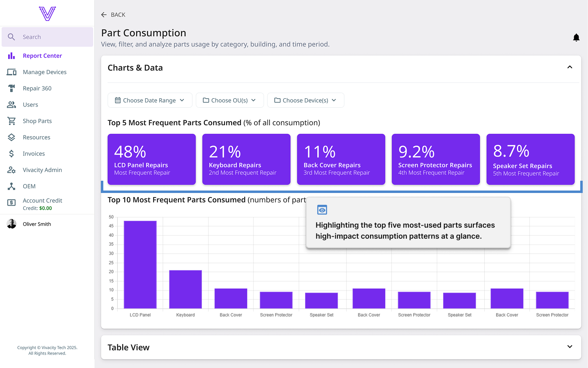
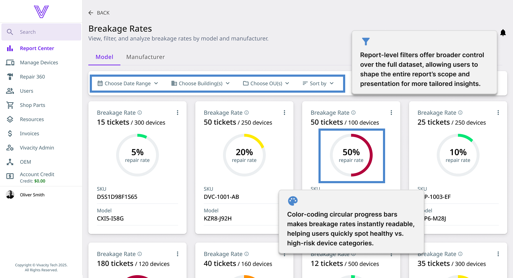

Visual Reporting
Dream™ Asset Management provides school districts with critical data including device usage, repair ticket activity, turnaround times, and more. When I joined the team, reports were heavily text- and table-based, making it difficult for users like district tech directors and superintendents to quickly digest information. While the data was valuable, the presentation lacked hierarchy, visual interest, and clarity.
I led an initiative to redefine Dream™'s reporting experience by introducing visual reporting patterns, reusable components, and a more intuitive layout. The goal was to help users understand their data at a glance, without feeling overwhelmed or bored. By applying strong visual design principles like space, color, hierarchy, rhythm, and variety, I transformed complex data into something engaging, readable, and actually exciting to explore.
Context & Problem
Before this initiative, Dream’s reports relied primarily on tables and dense bar charts. Some charts displayed more than 15 bars at once, making it challenging to distinguish trends or key metrics.
While users didn’t explicitly complain, the issues were obvious:
- Too much data presented at equal weight.
- Little visual rhythm.
- Minimal differentiation between primary and secondary insights.
The challenge was to introduce visual reporting without overwhelming users or compromising the accuracy of the data. Visual design alone couldn’t solve the problem; reports needed to balance aesthetics with practical usability.
Goals
The primary goals for this initiative were to:
- Transform data-heavy reports into visually intuitive, engaging experiences.
- Help users understand key insights faster and with less cognitive load.
- Introduce visual hierarchy so important metrics stand out immediately.
- Build reusable visual-reporting patterns that scale across future reports
- Create reports users actually enjoy looking at—reports that spark interest rather than fatigue.
Instead of focusing on one specific report, this initiative established a foundation for visual reporting across the entire platform.
Design Process
I worked closely with the product owner, who gathered needs and expectations directly from districts and school IT teams. Using this input, I explored different chart types, spatial arrangements, filtering behavior, and visual hierarchy to find the right balance between clarity and flexibility.
Key UX Challenges: The biggest challenge was keeping visuals useful without overloading the user. For example, a year-over-year bar graph ideally shows 12 data points—but some districts requested an 18-month view. Cramming 18 bars into a single graph would reduce readability. To solve this, I introduced a filter that allowed users to choose 12 or 18 months. This respected all user needs while keeping the default experience clean and digestible.
Key Design Decisions:
- Introduced layout patterns that gave hierarchy to the most important metrics.
- Added filtering and interactive controls to prevent overcrowding.
- Selected chart types based on clarity, not novelty.
- Used Dream™'s design tokens while adding scalable new components (such as visual cards and chart containers).
- Incorporated empty states and hover behaviors that guide users rather than distract them.
Throughout the process, I focused on building components that could be reused across multiple report types, ensuring long-term scalability for the product.
Visual Summary
Tap or click the images below to view them full size in a new tab.




Outcome
The new visual reporting patterns made insights significantly faster to understand. Instead of scanning dense tables or deciphering crowded graphs, users can now pick up on trends immediately thanks to cleaner layouts, clear hierarchy, and interactive filters. Reports feel modern, engaging, and purposefully designed rather than functional but dull.
The initiative demonstrated that reports don’t need to be boring and that thoughtfully designed visuals can elevate both comprehension and user satisfaction. The new components also provide a strong foundation for future reporting features, making it easier for Dream to expand its analytics capabilities over time.